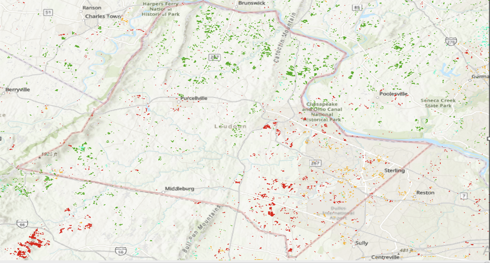

Urban Sprawl in Loudoun County, Virginia
Project Overview
This project examines urban sprawl and land-cover change in Loudoun County, Virginia using Landsat satellite imagery, GIS, and remote sensing techniques. The analysis compares land-cover conditions across multiple time periods to identify areas of development, vegetation change, and other landscape transitions associated with suburban growth.
Loudoun County provides a useful case study because of its rapid development and continued expansion within the Washington, D.C. metropolitan region. By comparing classified satellite imagery over time, the project illustrates where development has occurred and how the county's landscape has changed.
Video Presentation
Methodology
Landsat imagery was processed in ArcGIS Pro using a remote sensing workflow that included mosaicking, image smoothing, unsupervised classification, and change detection. The classified imagery was grouped into major land-cover categories and compared across study years to identify areas where land cover changed over time.
Change Detection

Land-cover change patterns in Loudoun County, Virginia identified through GIS and remote sensing analysis.
The change-detection results show that development is especially concentrated in the eastern portion of Loudoun County, where suburban expansion has been most extensive. The spatial pattern illustrates the contrast between the more developed eastern portion of the county and the more rural western portion.
Key Takeaways
This project demonstrates how satellite imagery and GIS can be used together to monitor urban growth over time. Unsupervised classification provides a way to organize satellite imagery into meaningful land-cover categories, while change detection makes it possible to identify where those categories have shifted across the landscape.